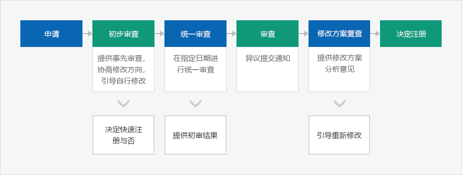
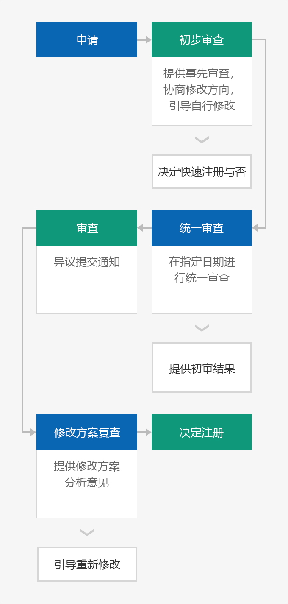

专利厅主要服务
- Home
- 经营与生活
- 知识产权
- 专利厅主要服务
第四次产业革命时代，技术创新和知识产权政策已上升为国家核心战略。韩国专利厅提供可信的审查及审判服务，为发明专利提供支援，加强专利保护，促进优秀知识产权商业化，与此同时加大相关人才培养力，改善国民服务政策等。
定制式三轨制专利审查制度
专利厅为知识产权的审查处理期限及审查质量提供有竞争力的服务，实行优先审查、一般审查和推迟审查构成的定制式三轨制专利审查制度。该制度可根据需求调整审查时间。通过优先审查制度，可以迅速获得专利权，抢占独家地位；而通过推迟审查，可为商业化提供充足的时间。
- 优先审查 : 委托专业机构进行在先技术调查，调整优先审查申请的处理时间
- 一般审查 : 在平均审查所需时间内提供审查结果
- 推迟审查 : 为希望推迟审查的顾客提供暂缓审查申请制度
专利审查3.0
摆脱现有的单向（One-Way）服务模式，在整个专利审查过程中，申请人与审查员相互沟通，共同创造高质量的新专利审查模式，分为初步审查、统一审查和修改方案评估三个阶段。
各审查阶段的主要制度



- 申请
- 初步审查 : 提供事先审查，协商修改方向，引导自行修改 -> 决定快速注册与否
- 统一审查 : 在指定日期进行统一审查 -> 提供初审结果
- 审查 : 异议提交通知
- 修改方案复查 : 提供修改方案分析意见 -> 引导重新修改
- 决定注册